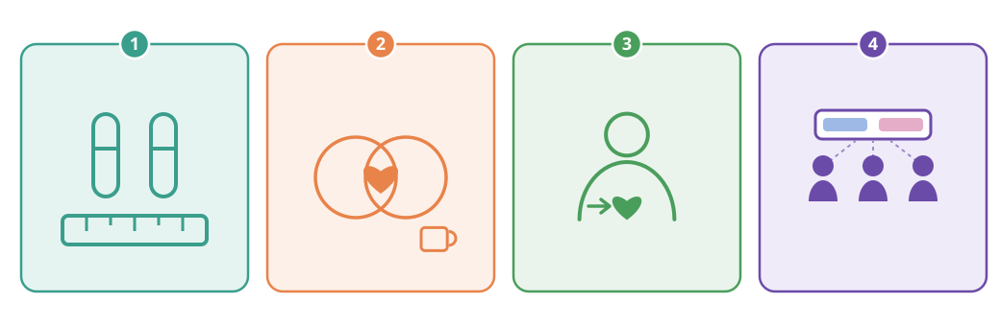
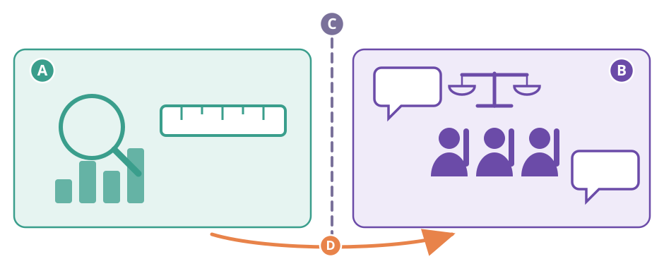
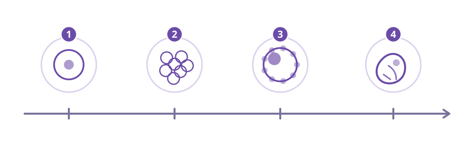

Escriu i dibuixa el que penses ara: no es corregeix. El tornaràs a mirar al final de la unitat.
3. Dibuixa (ràpid, no cal que quedi bonic): el passadís d'una botiga de joguines tal com el recordes. Què hi ha a cada banda i de quin color és cada banda?
Se solen barrejar quatre coses que no són la mateixa. Mira-les com quatre finestres per on es pot mirar una persona:
① Sexe biològic — el cos: òrgans, hormones, cromosomes. Es pot descriure i mesurar. En la majoria de persones aquests tres senyals van junts; en algunes no, i això també és biologia.
② Sexualitat — el conjunt de pràctiques i experiències vitals: afecte, desig, companyia, plaer, cura. Va molt més enllà de la reproducció: hi ha sexualitat sense reproducció, i n'hi ha a totes les edats.
③ Identitat sexual — com se sent una persona per dins. És un sentiment subjectiu i es va construint al llarg de la vida: no la pot mesurar ningú des de fora.
④ Gènere — el que una societat espera de cada persona: feines, colors, robes, maneres de fer. És una construcció social i cultural: els papers de gènere no venen determinats pel cos. La prova és senzilla: han canviat i canvien d'una època a l'altra i d'un lloc a l'altre, mentre que els cossos són els mateixos.
Les quatre finestres són una eina per pensar, no quatre calaixos on hagi d'entrar tothom.
Un pont important, per no confondre ③ i ④. El gènere (④) és una expectativa: la posa la societat des de fora i canvia amb els anys. La identitat (③) no és cap expectativa: és una cosa que la persona sap de si mateixa, que no tria i que no pot canviar per encàrrec. Per això són dues finestres i no una.
I encara n'hi ha una cinquena que avui no treballem a fons, però convé saber que existeix: l'orientació — de qui t'enamores o qui t'atrau. Tampoc no és cap de les quatre.
Una dada per situar-ho: fins al 1990 l'Organització Mundial de la Salut tenia l'homosexualitat a la seva llista de malalties. Aquell any la'n va treure. El que va canviar no van ser les persones: va ser el que la medicina considerava una malaltia.

La meva idea és… → la raó és… → una idea contrària podria ser…
Es parla d'un per un. Es pot dir «no ho sé» i es pot canviar d'idea a mitja conversa: canviar d'idea quan apareix una raó millor és exactament el que fa la ciència.
4. Escriu el número (o els números) de finestra de cada cas i, en una línia, per quina raó. N'hi ha que en necessiten dues.
| Cas | Finestra/es | Per quina raó (una línia) |
|---|---|---|
| Cas 1 | ||
| Cas 2 | ||
| Cas 3 | ||
| Cas 4 | ||
| Cas 5 | ||
| Cas 6 | ||
| Cas 7 | ||
| Cas 8 |
La ciència dona una definició biològica d'embrió: l'estadi del desenvolupament que va del zigot fins a la vuitena setmana; a partir d'aquí se'n diu fetus.
Què SÍ que pot dir la ciència: quantes cèl·lules hi ha el cinquè dia, quan es comença a formar el cervell, quan comença a bategar el cor, què fa falta perquè el desenvolupament continuï. Tot això es pot mirar i comprovar.
Un detall que sorprèn: la ratlla de la vuitena setmana la posen d'acord els científics perquè tothom faci servir la mateixa paraula, no perquè aquell dia hi passi res de cop. Per això «a partir de quina setmana se'n diu fetus» sí que és una pregunta de ciència: la resposta és la seva definició.
Què NO pot dir la ciència: quan comença a haver-hi una «persona», ni si l'avortament és acceptable o no ho és. Això no és cap mesura biològica: és una valoració, i és de cada persona i de la societat, que ho debat i ho decideix amb lleis.
Aquí ningú no et dirà què has de pensar. El que s'aprèn avui és a reconèixer quin tipus de pregunta tens al davant.


Comprovable i certa — es pot comprovar, i quan ho fas, surt que sí. «L'aigua bull a 100 °C al nivell del mar.»
Comprovable i falsa — també es pot comprovar, i quan ho fas, surt que no. «El Sol gira al voltant de la Terra.»
Valoració — no es pot comprovar de cap manera, perquè diu si una cosa està bé, malament o si val la pena. «Aquesta cançó és millor que l'altra.»
Compte amb el parany: que una frase sigui falsa no vol dir que sigui una opinió. «El Sol gira al voltant de la Terra» és falsa, no és una opinió.
13. Encercla el tipus i escriu la línia de sota.
(a) «Un cicle menstrual pot durar entre 21 i 35 dies (en els primers anys després de la primera regla els cicles solen ser més llargs i més irregulars).»
Com ho comprovaries, o per quina raó no es pot comprovar:
(b) «El rosa és un color de nena.»
Com ho comprovaries, o per quina raó no es pot comprovar:
(c) «Durant la regla no es pot fer esport.»
Com ho comprovaries, o per quina raó no es pot comprovar:
(d) «Un embrió de dues setmanes ja és una persona.»
Com ho comprovaries, o per quina raó no es pot comprovar:
(e) «Les persones que tenen ovaris tenen totes un cicle de 28 dies.»
Com ho comprovaries, o per quina raó no es pot comprovar:
14. L'ítem (d) barreja dues coses en una sola frase. Parteix-la.
La part que es pot descriure:
La part que és una valoració:
15. Pregunta investigable. «Els joves d'avui reben massa informació sobre sexualitat.» Tal com està, aquesta frase no es pot comprovar. Reescriu-la com a pregunta investigable i digues què mesuraries, a qui i com sabries la resposta.
Important: ha de ser una frase pública. Les converses de casa, de la família o d'amics no valen: aquí no es porta a classe el que ha dit ningú de l'entorn de ningú.